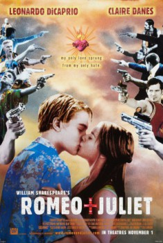

Romeo + Juliet (1996)


Two households both alike in dignity, In fair Verona where we lay our scene. From forth the fatal loins of these two foes, A pair of star-cross'd lovers take their life.

Etiquetas:Romantic EpicTeen RomanceTragedyTragic RomanceDramaRomance
País:Estados Unidos, 120 minutos.
Idiomas:Inglés
GénerosDrama, Romántica
Director/es:
Guionistas:
Códec de vídeo:Unknown
Número: 3488
TomatoMeter:

--

--
Clasificación IMDb:


6.7/10 (251.1K votos)
Certificación:
Argumento:
La famosa obra de Shakespeare es llevada a la Verona contemporánea reteniendo el diálogo original.
Reparto
Medio: Archivo de video,
Localización: D:\PELICULAS\ACTORES\Leonardo Dicaprio\Romeo And Juliet [1996]-[HD]\Romeo And Juliet [1996] [1080p].mp4
Prestado: No
Rel. aspecto: Unknown